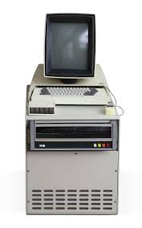

Tijdens zijn jeugd
Thacker werd geboren in Pasadena in Californië op 26 februari 1943.
Hij ontvind zijn bachelor voor natuurkunde in 1967.
Hierna deed Thacker mee aan "Project Genie", op zijn eigen universiteit, een computeronderzoeksproject, waar ondermeer "time-sharing" ontwikkeld werd: het delen van een computerhulpmiddel onder veel gebruikers tegelijkertijd.
Later richtte hij met anderen de Berkeley Computer Corporation (BCC) op, waar ze computers ontwierpen.
Thacker ontwierp de processor en het geheugensysteem. BCC was niet commercieel succesvol, maar deze groep werd de kerntechnologen van Xerox Palo Alto Peseach Center (PARC), een bedrijf dat computertechnologieën ontwikkeld.
Na zijn jeugd
Thacker werkte in jaren 70 en 80 bij PARC, als projectleider van het Xerox Alto personal computersysteem. Ook was hij mede-uitvinder van het Ethernet LAN.
Het project leidde tot de eerste computer met een GUI.
De hardware van deze computer, de Xerox Alto, was ontworpen door Thacker.
Het was ook de eerste computer die bestuurd werd met een muis.

In 2009 won hij de Turing Award, samen met 250.000 dollar, vanwege deze prestaties.
Hij vertelde over de Alto: "We knew it was revolutionary.
We built it with the very first semiconductor dynamic RAM, the Intel 1103, which was the first memory you could buy that was less than a tenth of a cent a bit.
As a result, we realized we could build a display that was qualitatively better than what we had at the time.
We had character generator terminals, and some of them were quite nice.
But they were limited in various ways, whereas the Alto had the property that anything you could represent on paper, you could put on the screen.
We knew that was going to be a big deal."
Thacker overleed op 12 juni, 2017.